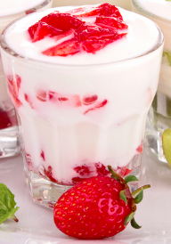

Vruchtenyoghurt met noten
Deze yoghurt is erg lekker als toetje bij bijna alle gerechten.
Ingrediënten
- volle yoghurt
- een handje vol aarbeien
- een trosje druiven
- agave syroop
- walnoten
- havermout
Bereidingswijze
- Pak een drinkglas en vul het voor een kwart met yoghurt.
- Strooi een laagje havermout over de yoghurt en schenk er ook de agave siroop overheen.
- Vul het glas bijna vol met yoghurt.
- Strooi de noten over de yoghurt.
- En vul de rest van het glas met de vruchten.
